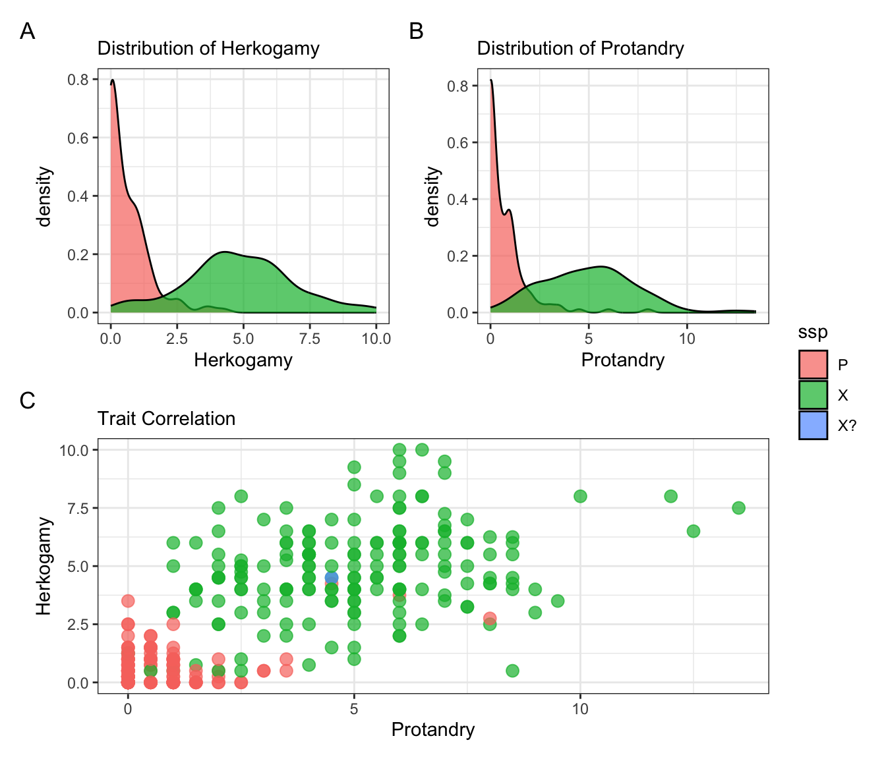
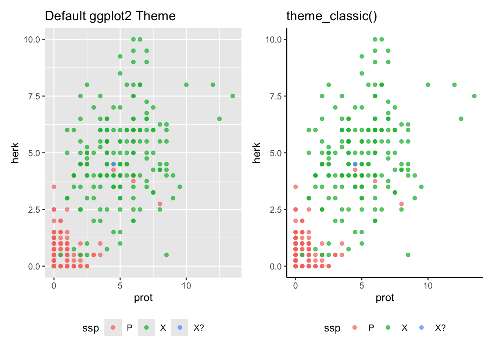

[• 10. Plots for the medium]{#plots_foR_medium) .quarto-section-identifier}
Motivating Scenario:
You’ve just completed a big analysis and created a clear, honest ggplot figure that perfectly shows your main result. Now you realize you have to give a talk, write a paper, and present a poster. You’re thinking about just using the same plot for each case, but realize that, forexample, no one will be able to read your axes labels if you present your plots in a talk. So now you want to customize your plot for the medium of presentation.
Learning Goals: By the end of this subchapter, you should be able to:
Adopt a strategic mindset for data visualization by recognizing that the “best” plot depends on its context and tailoring your design to the specific demands of the medium (e.g., talk, poster, paper).
Prepare publication-quality figures for scientific papers by:
Combining multiple plots into a single, cohesive multi-panel figure using patchwork.
Applying clean, professional themes like theme_bw() or theme_classic().
Formatting labels with mathematical symbols or italics using expression() and/or ggtext.
Design effective plots for live presentations like talks and posters by:
Dramatically increasing text size for readability from a distance using theme().
Using attention-grabbing visuals (like icons or isotype plots) to stand out in a crowded poster hall.
Enhance plots for digital mediums by:
Making plots interactive with packages like plotly and highcharter.
Designing clear, compelling infographic components that tell a single, powerful story.
Know when to be pragmatic by deciding between a pure-R solution and using graphics software for final, one-off annotations and design touches.
Tailoring Plots for Your Medium
There are many ways to tell a story. You could share it informally with a friend, write it in a book, produce it as a play, or perform it live on stage (like on The Moth podcast). Even if the core story is the same, you would tailor your approach for each medium.
The same is true when presenting data visually. We’ve already discussed that a good plot is designed for its specific audience and purpose. You might present your findings in a scientific talk, on a poster, in a manuscript for a peer-reviewed journal, a digital document, or perhaps “clickbait” or an infographic for a broader audience. Each of these mediums has different demands.
Here, we’ll go over how to customize your plots in R for a few of these common formats.
Make your life easier by knowing when you can skip doing it in R.
R is great because it is reproducible and dependable. What’s more, once you can do something in R, it’s pretty straightforward to apply that skill to a new dataset. This comes in handy when you’ll be doing the same task a bunch. But figuring out how to do a very specific, one-off tweak in R can be a huge time sink, and sometimes it makes more sense to make final touches in powerpoint, illustrator, or photoshop than to figure it our in R. Before you spend hours on a minor customization, ask yourself a few questions. Here is the guidance I use when making this decision:
Frequency: Will I do this sort of thing more than a handful of times? If so, I try to figure it out in R. If it’s a one-off task, I often don’t.
Time Investment: How long will this take to figure out in R versus doing it “by hand” in e.g. PowerPoint? If a manual edit in PowerPoint takes five minutes, that’s often smarter than spending two hours wrestling with code for a minor annotation.
Motivation: Why do I want to do this in R? Is it for convenience, utility, and/or growth, or am I motivated by pride? Don’t do it for pride!
Medium of Presentation: What is my final output? There is an expectation that figures for published papers are highly reproducible, so I use R exclusively for such figures. But for posters and talks, I am more likely to do a final touch-up “by hand.”
Plots for a scientific talk
Unfolding the narrative
We previously saw that talks offer a great opportunity to walk your audience through a plot as you build it up one step at a time. We also saw that as you do so you can provide the audience with plausible alternative outcomes and how we would interpret them biologically. You can achieve this by working through your ggplot code slowly (e.g. initially exclude geom_point() etc) and using annotate() or even Powerpoint to add alternative outcomes.
Plots in scientific talks require large text! We achieve this largely through the theme() function where we use element_text() to customize a specific feature of our plot.
Below is an interactive R session to get you started on this!
First, run the code as is to see the initial_plot with its default text sizes.
Next, copy and paste the code from the margin on the right into the session to see how theme() can change the text size.
Challenge: You will notice the y-axis tick mark labels are still small. Add a line of code inside theme() to make the axis.text.y larger as well.
Finally, feel free to add any other elaborations / explorations.
Remember ggthemeassist can really help with these tasks, and is a great way to learn!
ggplot2 has several built-in themes (like theme_linedraw() I added above) built into ggplot2. Read more here. Additional packages like ggthemes or hrbrthemes have even more options.
As we did above, we can customize these themes - but be sure to do this after running the theme. For example, the code below makes a large x-axis title with theme_linedraw.
Like a plot for a talk, a plot for a poster must be readable from a distance. In fact, for a poster, this is even more critical.
Text should be huge
Unlike a talk, a scientific poster does not get you a “captive audience.” Most poster presentations take place in large, crowded halls. So, I recommend having something about your poster that makes passersby want to look more closely. To achieve this, I often tend to break some of the standard plotting rules. For example, some carefully chosen “distractions” or “chartjunk” can get you attention. If you can do this while keeping your plot honest and interpretable, you’re in great shape.
Below I show how you can add images as data points with the ggimage package.
In the previous edition of this book, I showed how you could make bargraphs with pictures (so called “isotype plots”) with the ggtextures package. Read my previous text here.
For online documents. Digital formats open up opportunities to engage readers with interactive graphs and animations, making data visualization more dynamic and accessible. Here are some powerful tools to consider:
The Shiny package allows you to build interactive web applications that let users update graphs, tables, and other visual outputs in real-time, facilitating exploratory data analysis and the creation of interactive dashboards.
gganimate enables the creation of animations, bringing your data to life and capturing your audience’s attention more effectively. I used this package to make all of the gifs throughout this book.
Other packages, such as plotly, ggiraph, rbokeh, and highcharter, offer additional capabilities for creating interactive and visually engaging graphs. These tools make it easy for users to explore your data in a more hands-on way. For example, Figure Figure 1 shows an interactive plot that focuses on a specific penguin species when you hover over its points.
library(highcharter)hchart(penguins, "scatter", hcaes(x = flipper_length_mm, y = bill_length_mm, group = species, color = species))
Figure 1: Example interactive plot using highcharter
For Scientific Papers: Polishing for Publication
Scientific papers have specific conventions, and your plots should meet them to look professional and be clearly understood. As discussed in the previous section (read the bit on Brown M&Ms) scientists often judge a paper based on features of figures. So be sure to invest time in cleaning up the theme, precisely formatting labels with italics or mathematical symbols, and combining several plots into a single, multi-panel figure.
Combining Plots into a Multi-Panel Figure
Often, a single figure in a paper needs to tell a complex story by showing multiple views of the data. The patchwork package is the best tool for this job. It lets you combine separate ggplot objects into a single, publication-ready figure with panel labels (A, B, C, etc.).
In Figure 2 we create three different plots from our Clarkia hybrid zone data and then combine them into one figure. Doing so, I highlight some tricks of patchwork:
The + sign combines plots right to left (but sometimes you need to give it further directions).
The / sign combines plots up and down (but sometimes you need to give it further directions).
# Create plot 1: A density plot of petal areap1 <-ggplot(hz_phenos, aes(x = herk, fill = ssp)) +geom_density(alpha =0.7) +theme_bw() +labs(subtitle ="Distribution of Herkogamy", x ="Herkogamy")# Create plot 2: A density plot of protandryp2 <-ggplot(hz_phenos, aes(x = prot, fill = ssp)) +geom_density(alpha =0.7) +theme_bw() +labs(subtitle ="Distribution of Protandry", x ="Protandry")# Create plot 3: A scatter plot of two traitsp3 <-ggplot(hz_phenos, aes(x = prot, y = herk, color = ssp)) +geom_point(alpha =0.7, size =3, show.legend =FALSE) +theme_bw() +labs(subtitle ="Trait Correlation", x ="Protandry", y ="Herkogamy")# Combine them with patchwork(p1 + p2)/p3 +plot_layout(guides ="collect") +# Collect legends into oneplot_annotation(tag_levels ='A') # Add "A", "B", and "C" panel labels

Figure 2: A multi-panel figure created with the patchwork package to provide a comprehensive view of two floral traits in Clarkia subspecies. (A) A density plot showing the distribution of Herkogamy, revealing that subspecies ‘P’ (red) has much lower values than ‘X’ (green). (B) A similar density plot for Protandry. (C) A scatter plot revealing the positive correlation between the two traits. This combined view effectively shows both the individual trait distributions and their relationship in a single figure.
Adding Mathematical and Styled Text
Scientific papers require precision in labels. This can mean adding mathematical symbols for units (like mm²) or using italics for species names, as is standard in biology. These goals can be reached in more than one way. Two standard approaches are:
Using the ggtext package which allows you to write in html. OR
Using the expression() function, which is more “classic R” but a bit of a pain.
html help I don’t know how to write greek letter or whatever in html. Luckily you can consult these resources (for html math symbols and html for Greek letters ) or ask a chatbot to help!
Unfold the code below to see the ggtext approach I used to make Figure 3. Note however, that you will likely run into code doing it a different way elsewhere.
Italics and math
# You may need to install ggtext: install.packages("ggtext")library(ggtext)# First, create proper species names for the labelshz_phenos_formatted <- hz_phenos |>mutate(ssp_name =case_when( ssp =="P"~"*C. x. parviflora*", # Use Markdown for italics ssp =="X"~"*C. x. xantiana*", ssp =="X?"~"Uncertain")) |>filter(ssp_name !="Uncertain")ggplot(hz_phenos_formatted, aes(x = area, fill = ssp_name)) +geom_histogram(bins =15, color ="white", alpha =0.8) +facet_wrap(~ssp_name) +theme_linedraw() +labs(y ="Frequency",x ="Petal Area (in mm<sup>2</sup>)",fill ="Subspecies") +theme(strip.text =element_markdown(size =18), # Use element_markdown() to render italicslegend.text =element_markdown(),# Use element_markdown() to render italicsaxis.title =element_markdown(size =15),legend.position ="bottom")
Figure 3: Faceted histograms comparing the distribution of petal area for two subspecies. This plot italicizes subspecies names and uses a super-script to show that a value is squared.
Using Publication-Ready Themes
The default ggplot2 theme with its grey background is great for data exploration, but it’s not the standard for formal publications. Part of this goes back to the “brown M&M thing” - readers trust authors who make conscious decisions rather than defaulting to pre-set options. So, a standard step in making “publication-ready” plot is to apply a cleaner, simpler theme. As shown in Figure 4, functions like theme_bw(), theme_classic(), or theme_minimal() can help! (see above).
Using publication style themes
library(ggplot2)library(patchwork) # A basic plot with the default themep_default <-ggplot(hz_phenos, aes(x = prot, y = herk, color = ssp)) +geom_point(alpha =0.7) +labs(title ="Default ggplot2 Theme")+theme(legend.position ="bottom")# The same plot with theme_classic()p_classic <-ggplot(hz_phenos, aes(x = prot, y = herk, color = ssp)) +geom_point(alpha =0.7) +theme_classic() +# Apply the new themelabs(title ="theme_classic()")+theme(legend.position ="bottom")# Display side-by-side for comparisonp_default + p_classic

Figure 4: A comparison of ggplot2 themes for a scatter plot of Clarkia traits. (Left) The default theme_grey() has a grey background and grid lines, excellent for data exploration. (Right) Applying theme_classic() removes the background and grid, creating a cleaner look often preferred for scientific publications.
Be sure to use a consistent theme throughout the manuscript.
From Chart to Infographic: Telling a Visual Story
So far, we have focused on making excellent charts for scientific communication. But what if you need to explain your findings to the public, on a website, or in a report for a general audience? That’s when you move from a chart to an infographic.
While a scientific plot must show the full, transparent distribution of data, an infographic often simplifies the view to make a single message more powerful and clear. An infographic is much like poster presentation but with fewer details – it should grab attention and make a clear point and assume the audience trusts us. This means shifting your priorities from showing comprehensive data to communicating one single, powerful message. While we don’t lie with infographics, our goal is to make the point clear, and not worry as much about transparency.
Let’s take our Clarkia hybrid zone data and create one component for an infographic. Our story is simple: one subspecies has a larger petal area than the other. Notice how the code below differs from our previous plots. We summarize the data before plotting, remove all axes, and use a bold title to state the main finding directly. Figure 5 is designed to be a self-contained story.
Making an infographic
library(dplyr)library(ggplot2)library(scales) # For number() formattinglibrary(ggtext)# 1. Summarize the data to get the key takeawaysummary_data <- hz_phenos |>filter(ssp %in%c("P", "X")) |>group_by(ssp,site) |>summarise(mean_area =mean(area, na.rm =TRUE)) |>mutate(ssp_name =if_else(ssp =="P", "parviflora", "xantiana"))# 2. Build the infographic-style plotggplot(summary_data, aes(x = ssp_name, y = mean_area, fill = ssp_name, size = mean_area)) +geom_col(width =0.6, show.legend =FALSE) +# Add direct labels with formatted numbersgeom_text(y=0,aes(label =number(mean_area, accuracy =0.01)),vjust =-0.2, # Nudge text just above the bar# size = 7,fontface ="bold",show.legend =FALSE ) +scale_size_continuous(range =c(2, 15))+# Use a deliberate, simple color palettescale_fill_manual(values =c("parviflora"="gray60", "xantiana"="#56B4E9"))+scale_x_discrete(labels =c(parviflora="<br>parviflora<br><br><img src='https://www.calflora.org/app/up/entry/57/17193.jpg' width='100' />",xantiana ="<br>xantiana<br><br><br><img src='https://www.calflora.org/app/up/io/132/io39763-0.jpg' width='100' /><br>")) +# Add a strong title and subtitle that tell the storytheme_void() +labs(title ="Clarkia xantiana Has Larger Petals",subtitle ="Average petal area for two Clarkia subspecies across all sites.",x =NULL, y ="petal area"# We don't need axis titles ) +# Start with a completely blank theme and add back only what we needtheme(plot.title =element_text(size =22, face ="bold", hjust =0.5, margin =margin(b =10)),plot.subtitle =element_text(size =18, hjust =0.5, margin =margin(b =20)),axis.text.x =element_markdown(size =18, face ="bold"),axis.title.y =element_text(size =22, face ="bold",angle =90),strip.text =element_text(size =18, angle =270),# Add a buffer around the plotplot.margin =margin(15, 15, 15, 15),panel.border =element_rect(color ="pink", fill =NA, size =1))+facet_grid(site~., labeller ="label_both")
Figure 5: An example of an infographic component created from the Clarkia dataset. The plot uses horizontal bars and direct labels to clearly show that xantiana has a larger average petal area than parviflora at each of the four field sites. Including photographs of the flowers makes the comparison more tangible and engaging for a general audience.
Kabacoff, R. (2024). Modern data visualization with r. CRC Press.
Sievert, C. (2020). Interactive web-based data visualization with r, plotly, and shiny. Chapman; Hall/CRC.

![An infographic titled 'Clarkia xantiana Has Larger Petals.' The main chart is split into four horizontal panels, one for each site: S22, S6, SAW, and SM. Each panel contains two horizontal bars comparing 'parviflora' (gray) and 'xantiana' (blue). The blue 'xantiana' bar is consistently longer than the gray 'parviflora' bar in every panel. Each bar is directly labeled with its numerical value. Below the chart are two photographs: a pinkish flower labeled 'parviflora' and a lavender flower labeled 'xantiana'.](plots_foR_medium_files/figure-html/fig-infographic-1.png)